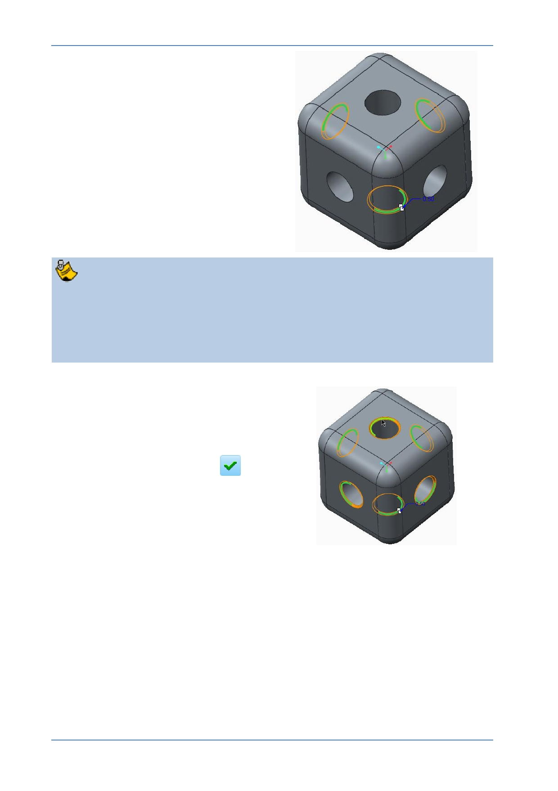

PTC Academic Program
6. Spinning the model to select more
edges:
Release the CTRL key.
Spin the model to see the three
edges that have not been selected.
If you middle-click but do not hold down the middle-mouse and move it to spin
the model, the feature will complete with only the first three edges selected and
the dashboard will close.
To re-open the dashboard and select the remaining edges, right-click Chamfer 1
from the model tree and select Edit Definition from the pop-up menu.
7. Selecting the remaining edges:
Press CTRL and select the remaining
edges.
8. Completing the chamfer.
Click Complete Feature …
to
complete the chamfer.
Spin the model to see the completed
chamfer feature.
Save your model
© 2012 PTC
Creo Parametric 2.0 Primer
Page 42